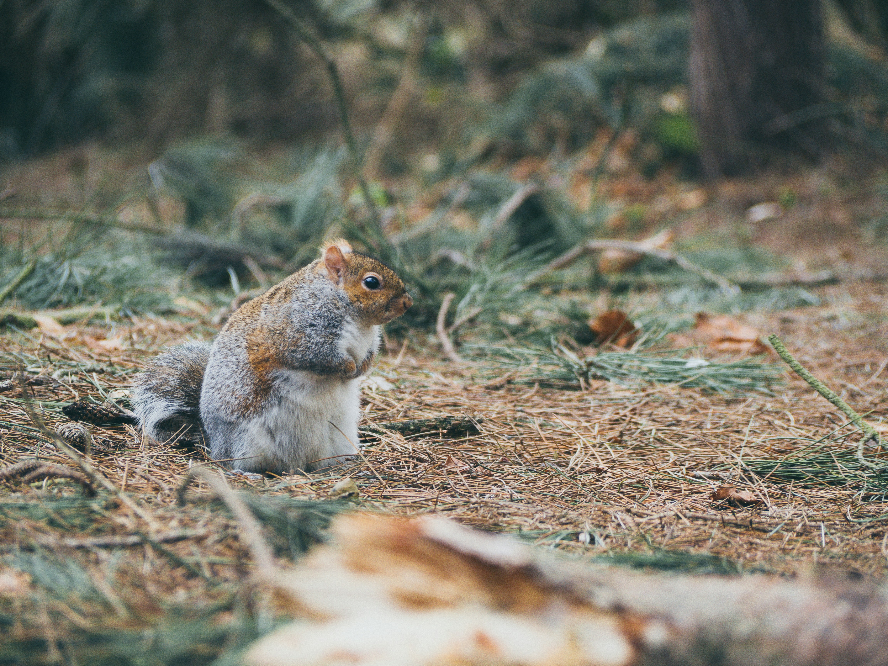

Welcome to our website, all about one of New York City’s furriest denizens—squirrels! This website will take you through the history of squirrels in New York, the habits and living patterns of Eastern Grey Squirrels, and our “generate a random squirrel” script, which links to the 2018 Central Park Squirrel Census.
We chose this project after some hemming and hawing about what the goal of our project should be. The subject matter really defines the project and the necessities of the research; we wanted to test our skills in writing code and script but did not want to find ourselves with a topic that stretched our rudimentary skills further than they could go. NYC Open Data was massively helpful in providing some direction, as these datasets were easily legible, had existing APIs for us to work with, and were easily digestible for people with just a basic understanding of New York City.
The generate a random squirrel function is based on the 2018 Squirrel Census, which holds data for 3,023 squirrel sightings in October of 2018. The squirrel data notes the geographic coordinates of the squirrel, the physical characteristics of the squirrel, whether the squirrel was moving or making any noises, and other relevant information.
We hope our website is as informative as it is entertaining, after all, we are talking about squirrels. In a broader sense, our hope is that our project shows the importance of cataloging information, of marking the paths of our roommates on Earth.